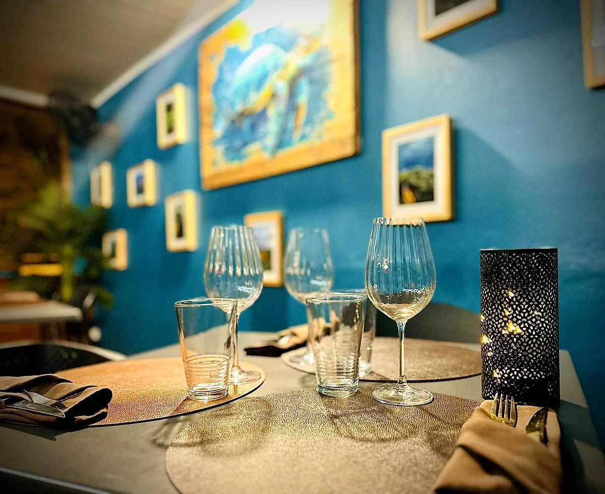
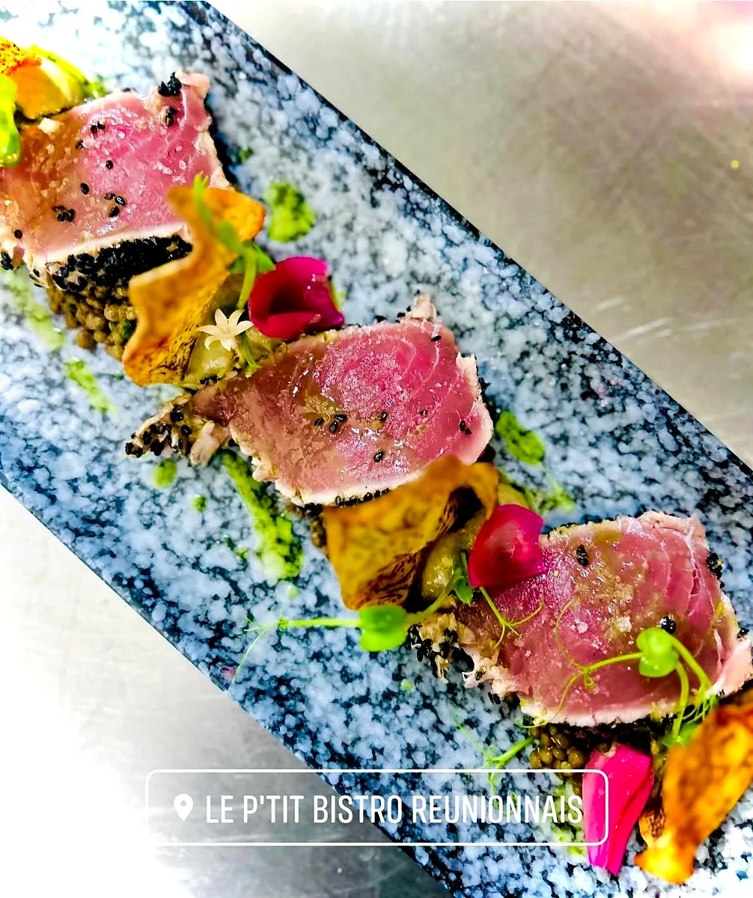
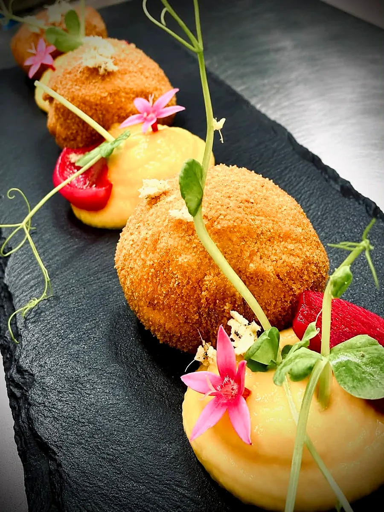
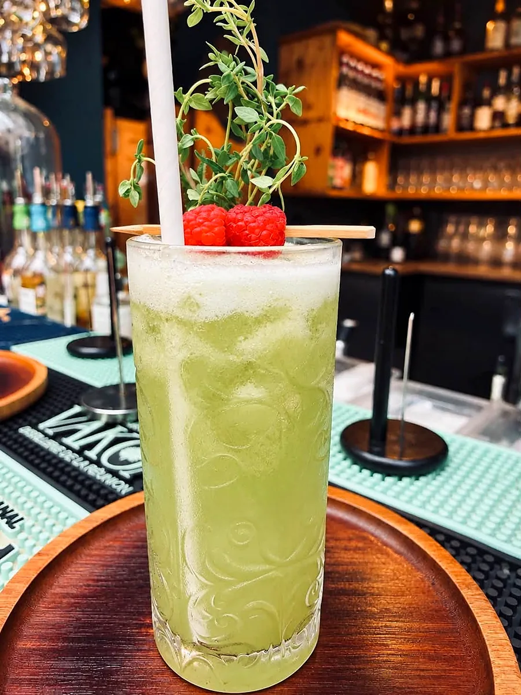
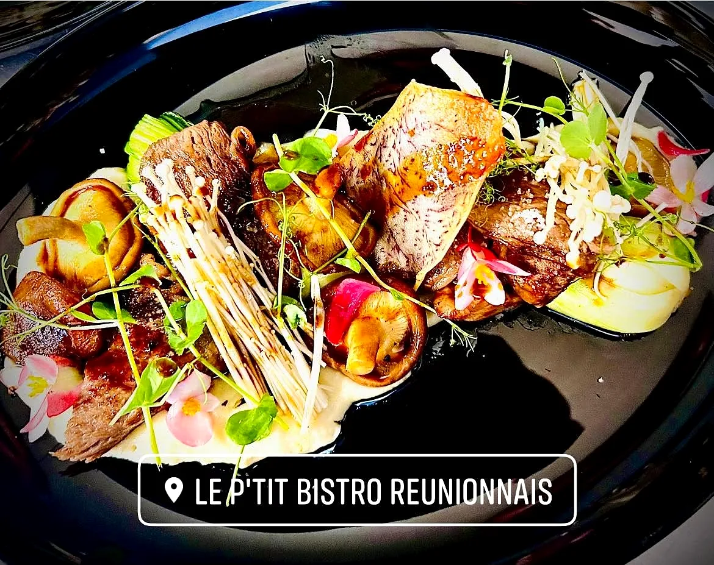
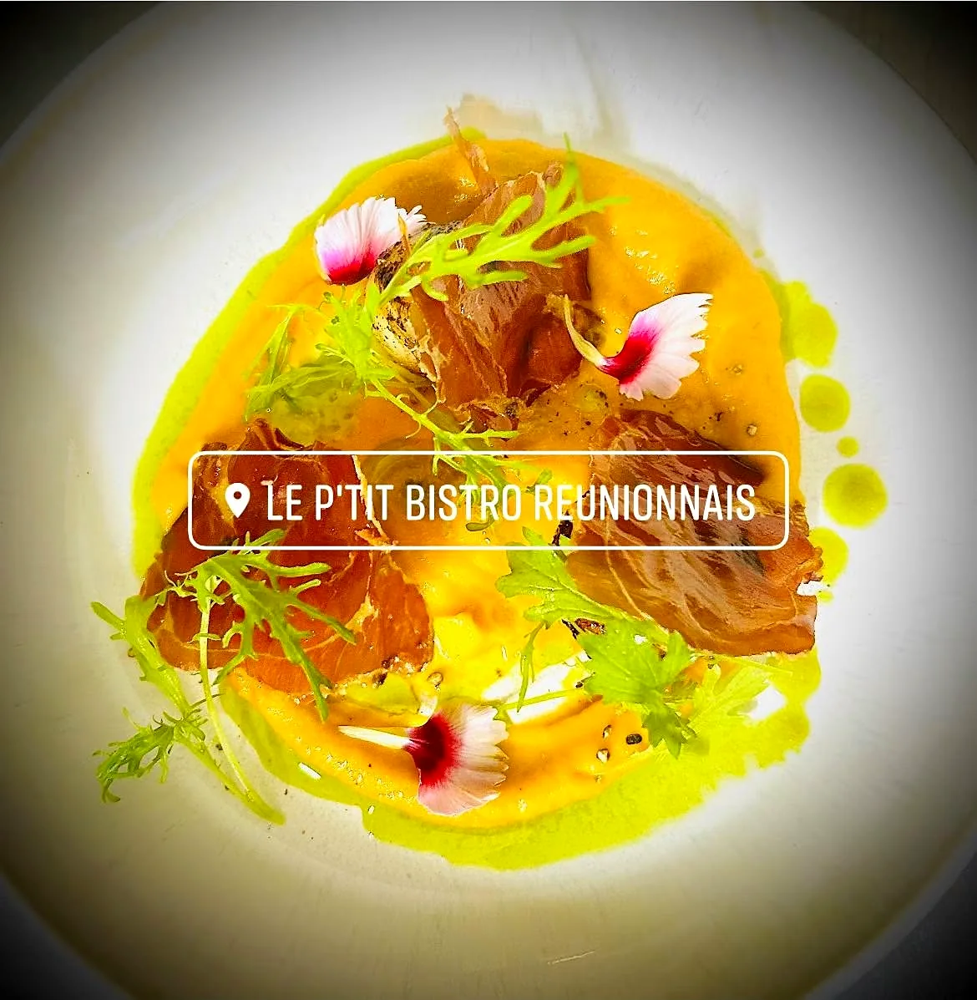
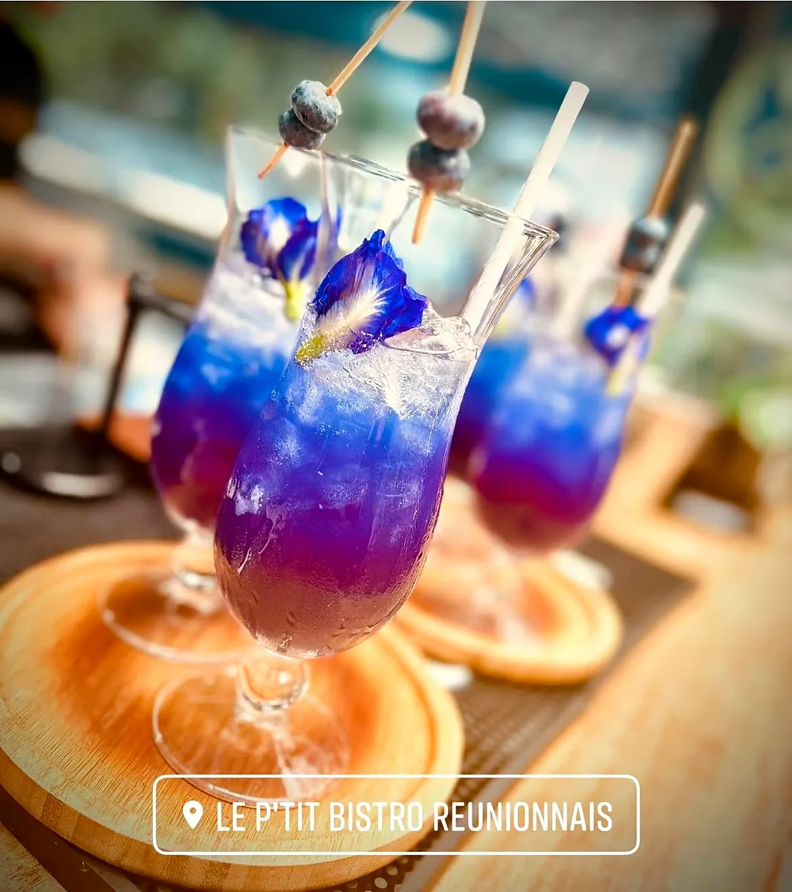
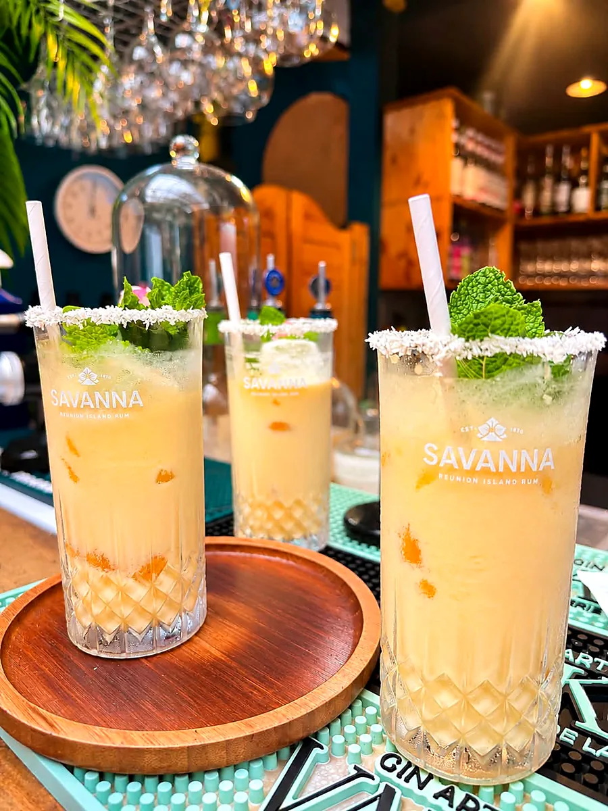
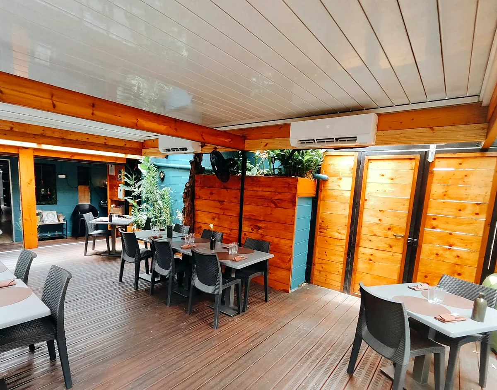

Notre histoire
Une cuisine de cœur, en famille
Le P'tit Bistro Réunionnais a ouvert ses portes en décembre 2019, rue Marius et Ary Leblond, à deux pas du centre de Saint-Paul. Depuis, l'adresse a grandi au rythme de ses fidèles.
En cuisine, une famille de passionnés : tout est fait maison, avec les produits frais de La Réunion, du foie gras au magret fumé. Une cuisine bistronomique où les saveurs de l'île rencontrent celles d'ailleurs.
« Un véritable moment de partage, de chaleur et d'évasion. »

Notre signature
Les plats fumés sous cloche
Depuis l'ouverture, c'est la spécialité de la maison : des plats fumés sous cloche, un concept inédit sur l'île. On soulève la cloche, la fumée s'échappe, et l'assiette se découvre. Aujourd'hui encore, le fumé signe la carte, du zourite façon achard aux aubergines fumées.
- 🔥
Le fumé
Une touche boisée et parfumée, la signature du P'tit Bistro.
- 🌿
Les produits péi
Zourite de nos côtes, palmiste, fenouil péi, vanille, combava…
- 🍸
Les cocktails maison
« Fraîcheur, saveurs et bonne humeur au rendez-vous ! »
La nouvelle carte · publiée le 20 octobre 2026
À la carte en ce moment
Extrait de la carte publiée sur la page Facebook du restaurant. La carte complète vous attend à table.
Dans l'assiette et au bar
Ça met l'eau à la bouche
Faites glisser →








Recommandé à 100 % (85 avis Facebook)
Ils en parlent
« Des délicieux plats bien concocté par le chef. Les cocktails sont toujours aussi bon. »
Stéphanie, avis Facebook
« Très belle découverte, nous recommandons ce p'tit bistro pour tout !!! accueil, service, qualité, cadre... tout y était !!! »
Sandrine, avis Facebook (juillet 2025)
« C'est toujours un plaisir de venir manger dans ce resto, tout est toujours très bon et très bien cuisiné. »
Juliet, avis Facebook (mars 2025)
« Très belle soirée entre amis, réussie de bout en bout grâce à la créativité et au savoir-faire de l'équipe du P'tit Bistro Réunionnais. »
Sandra, avis Facebook (février 2025)
✦ Offrir pour Noël ✦
Les repas de fin d'année au P'tit Bistro
Un déjeuner entre collègues, un dîner en famille ou entre amis : offrez-vous un moment de partage autour de la cuisine du chef et les cocktails maison. Pensez à réserver votre table !
Nous trouver
Réserver votre table
📍 Rue Marius et Ary Leblond, 97460 Saint-Paul
✉️ leptitbistroreunionnais@gmail.com
📘 Facebook : Le P'tit Bistro Réunionnais
🍽️ Réservation conseillée, par téléphone ou par Messenger.